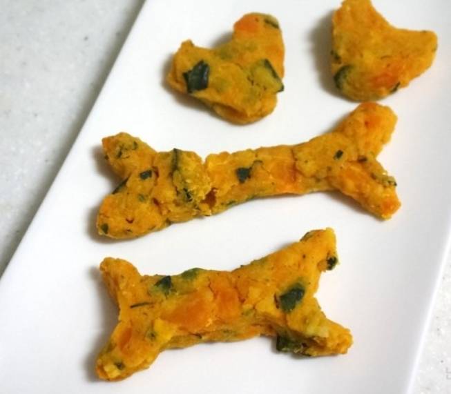
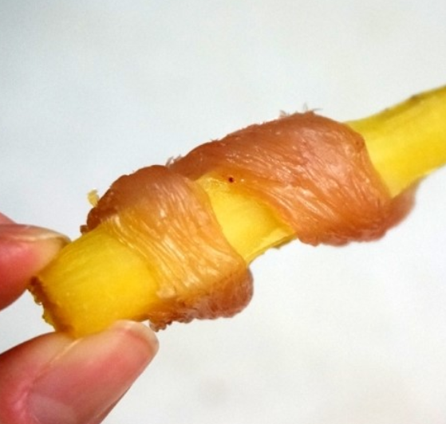

내 반려견을 위한
특별 레시피
------------------------------------------------------------
* 단호박 치즈스틱

재료 : 단호박, 식초, 우유
< 만드는 방법 >
1. 삶은 단호박 으깨주기
2. 우유를 끓여서 식초 3숟가락 넣어주면 무염치즈 완성
3. 으깬 단호박과 + 무염치즈 섞어주기
4. 일회용 봉지에 넣고 냉동실에 10분가량 기다리기
5. 냉동실에서 꺼낸 후 모양 만들고 건조하면 끝
------------------------------------------------------------
* 고구마 닭가슴살 져키

재료 : 고구마, 우유
< 만드는 방법 >
1. 삶은 고구마를 먹기 좋은 크기로 잘라주기
2. 닭가슴살은 우유에 30분 가량 넣어서 깨끗이 씻어주고 먹기 좋은 크기로 자르기
3. 고구마에 닭가슴살을 돌돌 감기
4. 건조하면 끝
------------------------------------------------------------